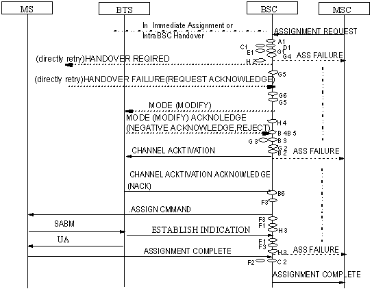

Measurement Counters
| ID |
Counter |
Description |
| 1278087431 |
CELL.KPI.TCH.ASS.CONG.TRAF |
K3011A:Failed TCH Seizures due to
Busy TCH (Traffic Channel) |
Description
This counter measures the number of failed TCH (traffic channel)
seizures due to no TCH available.
Measurement point
See measurement points G1-G6 in Figure 1.
- The BSC will assign a channel after receiving the ASSIGNMENT
REQUEST message. If there is no channel available and the BSC does
not support queuing or directed retry, the BSC measures the
counter.
- If Mode Modify is performed during the assignment procedure,
the CHANNEL MODE MODIFY message is sent to the MS. The MS performs
Mode Modify and sends the CHANNEL MODE MODIFY ACKNOWLEDGE message
to the BSC. When receiving this message, the BSC measures the
counter if the Um channel mode IE is abnormal.
- After the BSC receives the ASSIGNMENT REQUEST message, if there
is no channel available and the BSC supports queuing, a timer is
set to wait for an idle channel. If an idle channel becomes
available before the timer expires, the BSC successfully assigns
the channel. If no idle channels exist when the timer expires and
directed retry is not supported, the BSC measures the counter.
- Directed retry when the MRs reported by the MS have no target
cell available.
- Directed retry to another cell in the BSC. The originating cell
receives the Intercell Handover Reject message from the target
cell. The measurement object is the originating cell.
- Directed retry to another cell in the BSC. The handover fails
and the MS reconnects to the original signaling channel. The
measurement object is the originating cell.
- Directed retry to another cell in the BSC. The target cell
response is not received within scheduled time. The measurement
object is the originating cell.
- Directed retry to another cell in the BSC. The originating cell
receives the Inter Clear Request message from the target cell. This
clear message is used to inform the originating cell of the
directed retry failure and to request the originating cell to clear
the connection. The measurement object is the originating
cell.
- Directed retry to another cell in the BSC. The originating cell
sends the MS a HANDOVER COMMAND message, requesting the MS to
access a new channel. If the originating cell does not receive the
Inter Clear Request from the target cell within scheduled time, the
BSC measures the counter.
- Directed retry to another BSC. The originating cell receives
the Handover Reject message from the target BSC. The measurement
object is the originating cell.
Figure 1
Assignment procedure

Related Features
| Counter |
Feature ID |
Feature Name |
| CELL.KPI.TCH.ASS.CONG.TRAF |
GBFD-110502
|
Assignment and Immediate Assignment
|
Copyright © Huawei Technologies Co.,
Ltd.